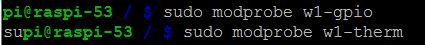
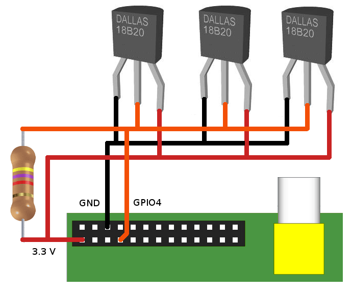
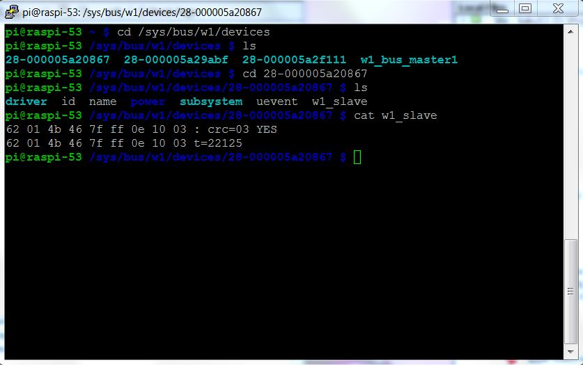

2. MicroLAN or Dallas OneWire sensors
The third method described uses a 1-wire module interface to retrieve the values
from a slave device. This interface is called MicroLAN and has been defined by
Dallas Semiconductors. Users can access sensor values by reading the value of
the slave device in the /sys/bus/w1/device directory. Standard modules w1-gpio
and w1-therm then will control the low-level details of the communication. And
we can open a device in the /sys/bus/w1/device directory and read the values
from there. The DS18B20 temperature sensor is an example of a 1-wire capable
sensor device compatible with the Dallas/MicroLAN specification.
The MicroLAN bus is slower than the 2-wire I2C bus, but as a result it can
be (much) longer. Sources on internet specify a length of 100 meters or more
(over CAT 5e Ethernet cable).
- DS18B20
temperature sensor (1-wire Dallas compatible)
After playing around with the Dallas bus for the Raspberry I found it to be the easiest bus to work with. It is fast enough for my purpose and setup is a breeze. The main disadvantage is that there are almost NO Dallas bus compatible sensors available, which is just too bad.
2.1 The 18B20 temperature sensor
 I bought 5 DS18B20 temperature sensors on eBay for LamPI environment with the plan to
make a small MicroLAN network with these sensors. Connecting 3 pieces 18B20 sensors in parallel works easy. And as wiring can be longer than with the I2C bus, you can connect almost as many Dallas sensors to my Raspberry as you want. Of course, a wireless sensor is even more convenient, but as the amount of wireless communication in my house grows, I'm afraid that at some moment a device will block certain frequency bands (some 433 transmitters do already) if they are not properly connected or are in error.
I bought 5 DS18B20 temperature sensors on eBay for LamPI environment with the plan to
make a small MicroLAN network with these sensors. Connecting 3 pieces 18B20 sensors in parallel works easy. And as wiring can be longer than with the I2C bus, you can connect almost as many Dallas sensors to my Raspberry as you want. Of course, a wireless sensor is even more convenient, but as the amount of wireless communication in my house grows, I'm afraid that at some moment a device will block certain frequency bands (some 433 transmitters do already) if they are not properly connected or are in error.
The TO-92 version that I ordered looks just like a transistor which makes them relatively easy
to work with. In the picture you see the cheap standard version of the 18B20. High
temperature and water resistant versions are available as well. In order to test the Dallas bus I ordered 5 of the cheap standard sensors and 2 water resistant sensors.
The water resistant sensors have a lead wire of approximately 1 meter which is for our purpose long enough to have a Raspberry near the area where I like to measure the temperature of. Apart from using this sensor outside the house, another area of application would be to measure temperatuer of central heating pipes etc.

2.2 Resources
- w1-gpio
module (sudo modprobe w1-gpio to load)
- w1-therm
module
Load both modules with the modprobe command:

These commands must be loaded after every reboot of the Raspberry. If you want to load modules automatically then add two lines with the words w1-gpio and w1-therm to the /etc/modules file.
After the modules are loaded it is easy to read the value of the sensors. Go to the /sys/bus/w1/devices directory and list the directories and files. Apart from the w1_bus_master command there will be one or more other directories, one for every device on the bus.
For the ds18b20 sensor, the directory name will start with 28-xxxxxx . Go to one of the ds18b20 directorys and use the following command to read the current termperature at the sensor:

Both modules w1-therm and w1-gpio need to be loaded prior to their usage. By
default, GPIO pin 4 (P1 connector 7) is used.
2.3 Software
The small C software program can be found in the sensors/ds18b20 directory. The software program is very simple in design, as all low-level synchronization and interrupt handling is done completely in the module. As a result, the bus softwar eis very (I mean VERY) reliable compared to the DS11, especially when the system is serving a lot of other interrupts, socket messages and user interaction.
My situations is the same as in the picture below (found it on the web somewhere). I have three sensors connnected to my RPI and read them with a small program..

Maybe a restart is required to have your RPI recognized the modules, but after that the device "files" w1_slave in the /sys/but/w1/device/28*/ directories can be read and will contain the lines we're loooking for ..

In the picture above you see a real-world example of my RaspberriPI that contains 3 Maxim sensors (w1). Clearly you can see that listing the /sys/bus/devices directory shows 3 connected sensors and the master node (skip that one).
After changing directory to one of the sensor dirs (starting with 28-) , reading the w1_slave file will result in 2 lines being read. The first line contains the data followed by a checksum. Only when the checksum is Ok (YES) then we know that the sensor can be read successfully. The second line read contains the data as well as the temperature (* 1000). You get the actual temperature by dividing the value by 1000, so in this case the measured temperature is 22.125 degrees C.
A quick test of the CRC function can be done by removing one of the sensors, which will for a while result in a checksum error and data errors (obviously). Note that after a while the third sensor completely disappeared from my system so the system has some self-healing properties. Luckily, installing the sensor again (in a live system) is possible and will immediately result in that sensor being available again.
There are several examples on the net how to read the device files, most however are written in script language. As I wanted to post successful temperature readings to the LamPI-daemon for further processing, I made a little program in C that opens a socket and reads all sensors and sends the output to the LamPI-daemon. The source code can be found on ~/sensors/ds18b20, and after a successful 'sudo make install' the executable is put in the ~/exe directory
2.4 Conclusion
The dallas 1-wire bus works VERY well, and the devices/bus is well supported by the RPI. Only drawback is that there are only a small amount of sensors available for Dallas. But the ds18b20 temperature sensors is a very good example of sensors that work very well and that are worth every penny and second of your time if temperature sensors is your main interest.
Sheepwalkelectronics sells modules that will enable you to connect other sensors to the 1-wire bus as well such as humudity sensors or a relay.
2.5 Links